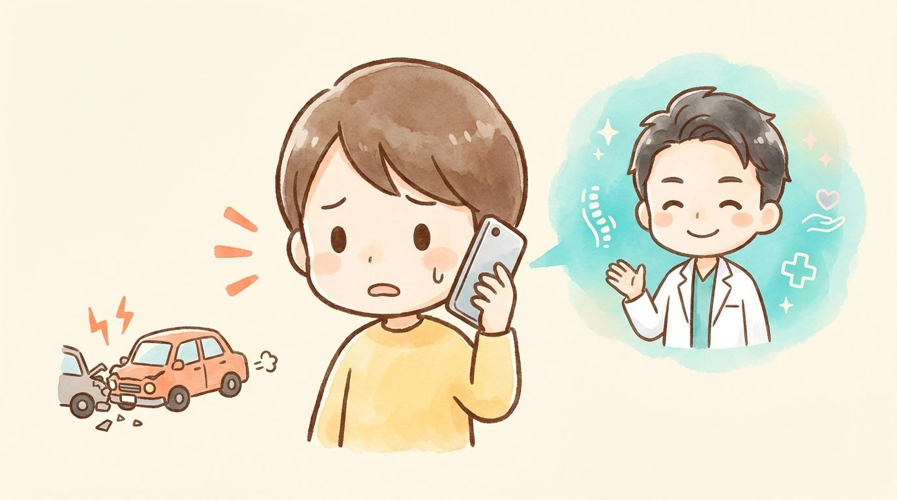
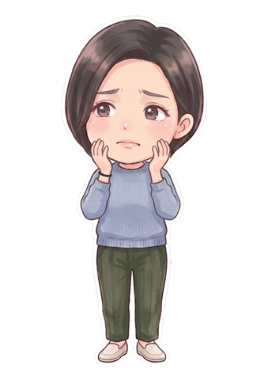

旅行や仕事でレンタカーを利用中に事故——。「自分の車じゃないけど保険はどうなるの？」と不安になりますが、レンタカーには保険が付帯しているのが一般的です。落ち着いて手順を踏めば、体のケアもきちんと受けられます。
レンタカー・カーシェア利用中の事故では、車両に付帯する保険（対人・対物・人身傷害など）と、相手方の保険の両方が関わります。まずレンタカー会社への連絡が必須で、無断修理や現場を離れると補償対象外になることがあります。

「何から始めればいいか分からない」段階で大丈夫です。交通事故治療専門アドバイザーが、あなたの状況でいま最初にやるべきことを無料でご案内します。提携医療機関への紹介状も、交通事故に強い提携弁護士のご紹介も、窓口はぜんぶ小牧院ひとつで済みます。
相手の自賠責・任意保険から補償を受ける基本パターン。ご自身のケガの通院は通常の事故と同じ流れです。
レンタカー付帯の保険で対応。人身傷害補償が付いていれば自分のケガもカバーされることが多いです。
カーシェアも各社の補償制度があります。友人の車を借りていた場合はその車の保険（他車運転特約など）の確認が必要です。
過失割合の考え方は通常の事故と同じです。レンタカーだからといって不利になることはありません。
ノンオペレーションチャージ（NOC）など車両側の費用と、体のケガの補償は別の話です。体の補償を遠慮する必要はまったくありません。
ここでの説明は一般的な目安で、実際の割合は事故の個別状況・証拠・交渉で変わります。ただ、いきなり自分で弁護士を探す必要はありません。まずは小牧院の交通事故治療専門アドバイザーにご相談ください。状況を伺った上で、必要なら交通事故に強い提携弁護士に当院からおつなぎします。相談の入口はここで十分です。
まず車を安全な場所へ移動し、ケガ人がいれば救護を最優先に。どんなに小さな事故でも必ず警察に届け出てください。気が動転して手順が分からないときは、現場からでも小牧院にお電話ください（0568-90-1841）。落ち着いて一つずつご案内します。
相手の氏名・連絡先・ナンバー・保険会社を確認し、現場や車の損傷をスマホで撮影しておきます。「何を撮っておけばいい？」もアドバイザーがお電話で具体的にお伝えできます。
痛みがなくても必ず受診を。医師の診断書が「事故によるケガ」の証明になります。どの病院に行けばいいか迷ったら、先に小牧院へご連絡を。提携医療機関をご紹介し、紹介状を作成します。病院探しから当院にお任せください。
通院先は自分で選べます。「BTG接骨院 小牧院に通います」とお伝えください。「なんて言えばいいか分からない」は、アドバイザーが伝え方までお教えします。電話が苦手な方もご安心を。
状態を検査し、その日から施術を始めます。保険会社対応・慰謝料の疑問・弁護士が必要な場面まで、窓口は小牧院ひとつ。あちこちに相談して回る必要はありません。
「何から始めればいいか分からない」段階で大丈夫です。交通事故治療専門アドバイザーが、あなたの状況でいま最初にやるべきことを無料でご案内します。提携医療機関への紹介状も、交通事故に強い提携弁護士のご紹介も、窓口はぜんぶ小牧院ひとつで済みます。
連絡の順序は「警察→レンタカー会社→保険会社」。レンタカー会社への連絡を忘れると補償が受けられないことがあるため最優先で。その後の通院先は通常どおりご自身で選べます。
旅行帰りに痛みが出てきた、というご相談も多いケースです。小牧市にお住まいなら、旅先の事故でも地元でしっかりケアを続けられます。
自賠責保険が適用されるケースでは、被害者の方の窓口負担は原則0円です。適用されるかどうか判断が難しい事故形態でも、保険の状況を確認しながらご案内しますので、まずはご相談ください。
交通事故ではよくあることです。事故直後は体が興奮していて痛みを感じにくく、むちうちなどは2〜3日後から症状が出ることが少なくありません。事故から時間が空くほど因果関係の証明が難しくなるため（目安14日以内）、違和感の段階で早めに受診してください。
通えます。医師の検査・経過観察を受けながら当院で施術する「併用通院」の方は多くいらっしゃいます。検査が必要な場合は提携医療機関への紹介状の作成にも対応しています。
当院の交通事故治療専門アドバイザーが、連絡の仕方から必要書類までサポートします。過失割合や賠償でもめそうな場合は、交通事故に強い提携弁護士のご紹介も可能です。一人で抱え込まないでください。
当院独自の制度で、交通事故の施術を受けられた方へ通院状況に応じて最大2万円のお見舞金をお渡ししています。保険会社から支払われる慰謝料とは別に受け取れます。
できます。事故証明と医療機関の受診記録があれば、お住まいの近くの施術所に通うのは一般的なことです。旅先で受診していない場合は急いで医療機関へ。紹介状の作成も可能です。
されません。車両に関する費用とあなたの体のケガの補償は別枠です。体の補償・慰謝料はきちんと受け取ってください。

レンタカー事故は連絡先が多くて混乱しがちですが、「警察→レンタカー会社→保険会社→体のケア」の順で進めれば大丈夫です。
体のケアは地元・小牧で。BTG接骨院 小牧院が、旅の後の痛みまで責任を持ってサポートします。
この記事を閉じる前に、LINEで「レンタカーでの事故に遭った」と一言送ってみてください。それだけで、あなた専用の「次にやること」が返ってきます。相談は無料、しつこい営業は一切ありません。

レンタカーでの事故のことなら、BTG接骨院 小牧院へ。
LINE・お電話で、無料相談を受け付けています。